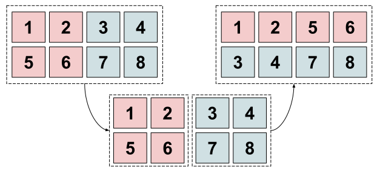

This post will form the foundation of a sequence of posts on various parallelization strategies used during training and inference of transformer models. The goal is simple: implement several commonly used parallelization strategies using NumPy, such that a (tiny) transformer model can train1.
1 Code is stored at GitHub.
However, NumPy does not work distributed, so we need some way to (1) run it distributed and (2) communicate tensor data between processes.
1 Communication Backends
We will get inspired by looking at how PyTorch does distributed computing. PyTorch has three options available for this, and calls these communication backends. They are described in detail in the docs2:
- Gloo3, created by Meta which implements various communication primitives specifically targeted at deep learning. It implements a lot of communication primitives for the CPU and the most important ones for the GPU too. Nice! But i’d rather use something that is
pipinstallable. - MPI, the standard interface for message passing. This has most of the communication primitives available (and no doubt Gloo is designed with this standard in mind). We have a selection of python packages available, most notably
mpi4py. - NCCL4, Nvidia’s communication library targeted towards for CUDA framework. Interesting, but we are not working on the GPU here.
3 https://github.com/facebookincubator/gloo. Note that they advice you to use Gloo only for CPUs.
MPI it is! This solves issue (1). Now let’s look a bit at MPI and see how we can communicate data to solve issue (2).
2 Introduction to MPI
MPI, the message passing interface, is a standard for message passing on parallel architectures. As such, it specifies a range of protocols to communicate between processes but does not describe the underlying algorithms to do so. We will use the mpi4py python package that implements the major message passing protocols.
3 Adding NumPy in the Mix
The mpi4py library comes with support for NumPy arrays with some caveats. Documentation is a bit sparse, but in most cases you can just go with the capitalized version: All_reduce, Scatter, …, etc. We also don’t need all the ops, but we will need is support for the following5 operations:
5 This list is compiled from a crawl of the Megatron-LM and TeraPipe codebases.
all_reduceall_gatherbroadcastscatterreduce_scatter
I’m trying to keep it somewhat conformed to how PyTorch does it, so whenever possible the operation is in-place (or in-place-ish).
3.1 Broadcasting
def broadcast(
tensor: np.ndarray,
src: int = 0,
) -> None:
"""Broadcast tensor to all processes.
Args:
tensor (np.ndarray): NumPy array.
src (int): Source rank from which to broadcast.
"""
np.copyto(tensor, MPI_COMM.bcast(tensor, root=src))The fact that we broadcast a contiguous stream of bytes from one device (root) to all others makes it such that we don’t really need to be careful here.
3.2 Reductions
Now we are cooking. Reductions come in several forms and require a reduction op. In basically 99% of cases it will be MPI.SUM, and for some you might need MPI.MAX (think of the max trick for a distributed Softmax). First up is the simple reduce. We reduce to a certain destination process, typically root. If root is handling the function we can use MPI.IN_PLACE to designate the root tensor also as receiving buffer:
def reduce(
tensor: np.ndarray,
dst: int = 0,
op: MPI.Op = MPI.SUM,
) -> None:
"""Reduce tensor across all processes and broadcast the result
back to a single process.
Args:
tensor (np.ndarray): NumPy array.
dst (int): Rank on which we gather the reduction.
op (MPI.Op): Operation to reduce the tensor.
"""
if npdist.rank() == dst:
MPI_COMM.Reduce(MPI.IN_PLACE, tensor, op=op, root=dst)
else:
MPI_COMM.Reduce(tensor, None, op=op, root=dst)All-reduce is even easier, since in that case we can set every process’ receiving buffer as MPI.IN_PLACE:
def all_reduce(
tensor: np.ndarray,
op: MPI.Op = MPI.SUM,
) -> None:
"""Reduce tensor across all processes and broadcast the result
back to all processes.
Args:
tensor (np.ndarray): NumPy array.
op (MPI.Op): Operation to reduce the tensor.
"""
MPI_COMM.Allreduce(MPI.IN_PLACE, tensor, op=op)Practically speaking, we will only use all-reduce, but we will need it a lot. For example, tensor-parallel requires the split results after the MLP and attention layer to be all-reduced in the forward pass and the gradients need to be all-reduced in the backward pass.
3.3 Scatter
I’m mainly adding scatter as a way to start with a single model weight and split that along several processes. In that sense, we take a source tensor, split it along an axis and send it to the destination tensor - each process will have each own destination tensor. Here we need to know the world size and we request it with the world_size() function:
def scatter(
source_tensor: np.ndarray,
destination_tensor: np.ndarray,
axis: int,
src: int = 0,
) -> None:
"""We scatter the source tensor along an axis and the scattered result
will be collected in the destination tensor for each process.
Args:
source_tensor (np.ndarray): NumPy array that collects the scattered result.
destination_tensor (np.ndarray): List of tensors to scatter.
axis (int): axis to split source_tensor and scatter the results with.
src (int): Rank from which we scatter the tensor.
"""
scatter_list = np.split(source_tensor, world_size(), axis=axis)
scatter_list = np.concatenate([np.ravel(x) for x in scatter_list])
MPI_COMM.Scatterv(scatter_list, destination_tensor, root=src)There is an interesting operation going on here which is ravel. This ensures that however we split the axis, we send a contiguous block of data to each process. Scattering is also relatively easy. The counterpart to it, gathering, is not.
3.4 All-Gather
If gather is a sort of inverse to the scatter operation, we here receive a contiguous block of data from each process and need to collect it in the correct shape. That last bit is somewhat tricky; the figure below explains the issue at hand.

The solution that I found for this is rather ugly and involves splitting the gathered results and reshaping appropriately, but it does work6.
6 If you know there is a better way of dealing with this, please reach out!
What is all-gather typically used for? It’s used at least in Megatron-LM and Deepspeed style sequence parallelism.
def all_gather(
source_tensor: np.ndarray,
destination_tensor: np.ndarray,
axis: int = -1,
) -> None:
"""Gather source tensors from each process and collect it in the
destination tensor.
MPI sends a contiguous stream of bytes from each process. To ensure
the expected shape is returned in destination tensor, we collect
the contiguous stream per process and reshape each accordingly.
Args:
source_tensor (np.ndarray): Source tensor for each process.
destination_tensor (np.ndarray): Tensor to gather the results.
axis (int): The axis on which the tensor needs to be concatenated.
"""
receiving_buffer = np.empty(np.prod(destination_tensor.shape))
MPI_COMM.Allgather(source_tensor, receiving_buffer)
receiving_buffer = np.split(receiving_buffer, world_size(), axis)
receiving_buffer = np.concatenate(
[x.reshape(source_tensor.shape) for x in receiving_buffer],
axis=-1,
)
np.copyto(destination_tensor, receiving_buffer)3.5 Reduce-Scatter
I ran into the same issue with contiguous data streams when trying to implement the reduce-scatter operation with NumPy arrays. I’m not sure how MPI does it underneath, but after a simple timeit benchmark with some reasonable shapes ~ (256, 256) the built-in Reduce_scatter is about 1.5x faster.
def reduce_scatter(
source_tensor: np.ndarray,
destination_tensor: np.ndarray,
op: MPI.Op = MPI.SUM,
) -> None:
"""Reduce source tensor to root process and scatter the reduction
back to all processes.
Again the issue with contiguous data streams - but I could not
find a workaround for MPI_COMM.Reduce_scatter so I resorted to using
the `reduce` and `scatter` operations I defined earlier.
Args:
source_tensor (np.ndarray): Source tensor for each process.
destination_tensor (np.ndarray): Tensor to gather the results.
op (MPI.Op): Operation to reduce the tensor.
"""
# Maybe soon:
# MPI_COMM.Reduce_scatter(source_tensor, destination_tensor, op=op)
reduce(source_tensor, dst=0, op=op)
scatter(source_tensor, destination_tensor, axis=-1, src=0)4 Concluding
We’ve implemented the most commonly used communication operations available in well-known codebases. There are definitely some places that can be improved (all_gather and reduce_scatter) but for now everything is set-up to start working on the next post in this series: Megatron-LM style Tensor parallelism.